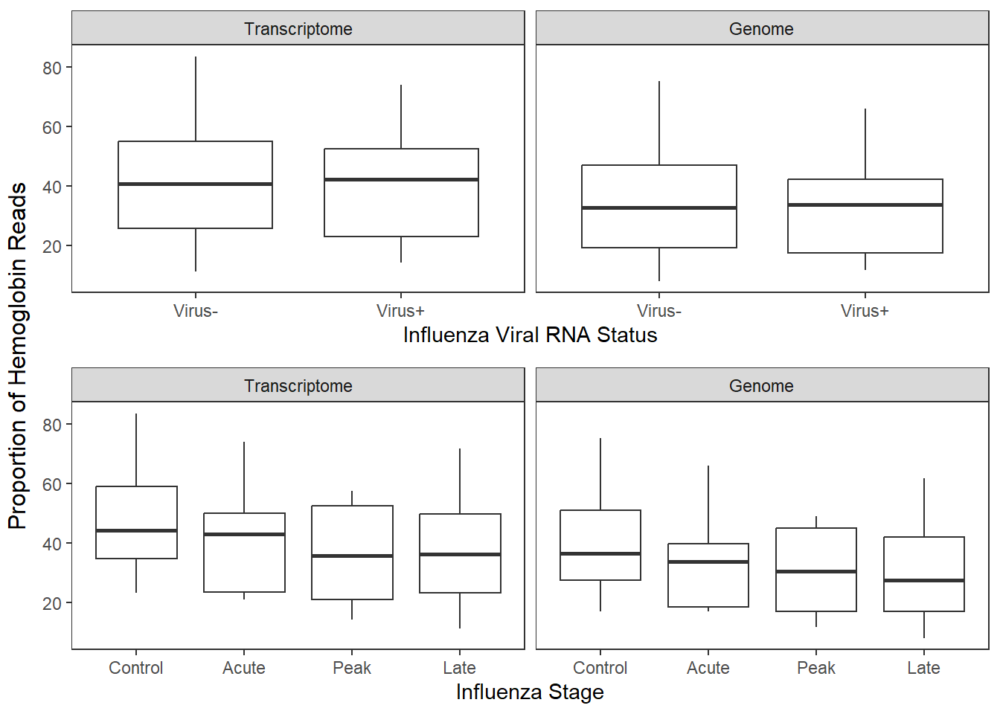

2 LOC Gene Identification
2.2 Load data
txome_genes <-
read.table("Input Files/txome_genecounts.txt") %>%
rownames_to_column(var="gene")
txome_map <- read.table("Input Files/txome_transcript-gene_map.txt",
header=1)
txome_seqs <- readDNAStringSet(
"C:/Users/Christina/OneDrive - University of Maine System/hg-rna/txome_denovo_GG.okay_trim.txt",
format = "fasta", seek.first.rec = TRUE, use.names = TRUE)
gnome_genes <-
read.table("Input Files/gnome_genecounts.txt") %>%
rownames_to_column(var="gene")
gnome_map <- read.table("Input Files/gnome_transcript-gene_map.txt",
header=1)
gnome_seqs <- readDNAStringSet(
"C:/Users/Christina/OneDrive - University of Maine System/hg-rna/gnome_Transcript_Seqs_exons_trim.txt",
format = "fasta", seek.first.rec = TRUE, use.names = TRUE)
meta <-
read.csv("Input Files/metadata.csv") %>%
mutate(rna=ifelse(disease_stage=="acute", "Virus+",
ifelse(disease_stage=="peak", "Virus+", "Virus-")))2.3 Extract gene sequences
2.4 Blast sequences
blastn against nt database with code:
- blastn -db nt -query input.fasta -max_target_seqs 2 -max_hsps 1 -evalue 0.01 -perc_identity 80 -outfmt “10 std qcovs qcovhsp stitle” -out output.csv -remote
2.5 Process BLASTn Results
2.5.1 Transcriptome
2.5.1.1 Read in & tidy results
txome_blast <-
read.table("Input Files/txome_loc_blastresults.csv",
header=FALSE, sep=",", col.names=paste0("V", seq_len(24)),
fill=TRUE, quote="") %>%
mutate_all(as.character) %>%
mutate_if(is.character, ~replace_na(.,"")) %>%
mutate(V15=paste0(V15, V16, V17, V18, V19, V20, V21, V22, V23, V24)) %>%
select(!c(16:24)) %>%
setNames(c("transcript_id", "sseqid", "pident", "length", "mismatch", "gapopen", "qstart",
"qend", "sstart", "send", "evalue", "bitscore", "qcovs", "qcovhsp", "stitle")) %>%
select(transcript_id, pident, qcovs, evalue, stitle) %>%
left_join(., txome_map)2.5.1.3 Loop
for (i in 1:nrow(txome_loc)) {
data <- txome_blast[txome_blast$gene_id==txome_loc[i,1],]
# Remove lines with vague terms in stitle title
data <- data[grep("uncharacterized", data$stitle, invert = TRUE),]
data <- data[grep("genome assembly", data$stitle, invert = TRUE),]
data <- data[grep(" chromosome", data$stitle, invert=TRUE),]
if (nrow(data)==0) {
next
}
# Extract gene names in ()
for (i in 1:nrow(data)) {
stitle <- data[i,]$stitle
{if(grepl('\\(', stitle)) {
newstitle <- str_extract(stitle, "(?<=\\()([^()]*?)(?=\\)[^()]*$)")
}
else{newstitle <- NA}
}
data[i,]$stitle <- newstitle
}
# Select first stitle for each ID in transcript
data <- data[ !duplicated(data$transcript_id), ]
# Select only unique stitles for each gene (across transcripts)
data <- data %>% distinct(stitle, .keep_all=TRUE)
# Exclude rows with irrelevant gene names (NA, LOCs, long names)
data <-
data %>%
filter(!stitle=="NA" &
!stitle=="" &
!grepl("^LOC", stitle) &
!nchar(stitle) > 20)
# If there is one row left of the dataframe, save to a list
{if((nrow(data))==1) {
txome_geneassignments <- rbind(data, txome_geneassignments)
}
else{txome_needcheck <- rbind(data, txome_needcheck)}
}
# End Loop
}2.5.2 Genome
2.5.2.1 Read in & configure gnome blastn files
gnome_blast <-
read.csv("Input Files/gnome_loc_blastresults.csv",
header=FALSE, sep=",", col.names=paste0("V", seq_len(21)),
fill=TRUE, quote="") %>%
mutate_all(as.character) %>%
mutate_if(is.character, ~replace_na(.,"")) %>%
mutate(V15=paste0(V15, V16, V17, V18, V19, V20, V21)) %>%
select(!c(16:21)) %>%
setNames(c("transcript_id", "sseqid", "pident", "length", "mismatch", "gapopen", "qstart",
"qend", "sstart", "send", "evalue", "bitscore", "qcovs", "qcovhsp", "stitle")) %>%
select(transcript_id, pident, qcovs, evalue, stitle) %>%
left_join(., gnome_map)2.5.2.3 Loop
for (i in 1:nrow(gnome_loc)) {
data <- gnome_blast[gnome_blast$gene_id==gnome_loc[i,1],]
# Remove lines with vague terms in stitle title
data <- data[grep("uncharacterized", data$stitle, invert = TRUE),]
data <- data[grep("genome assembly", data$stitle, invert = TRUE),]
data <- data[grep(" chromosome", data$stitle, invert=TRUE),]
if (nrow(data)==0) {
next
}
# Extract gene names in ()
for (i in 1:nrow(data)) {
stitle <- data[i,]$stitle
{if(grepl('\\(', stitle)) {
newstitle <- str_extract(stitle, "(?<=\\()([^()]*?)(?=\\)[^()]*$)")
}
else{newstitle <- NA}
}
data[i,]$stitle <- newstitle
}
# Select first stitle for each ID in transcript
data <- data[ !duplicated(data$transcript_id), ]
# Select only unique stitles for each gene (across transcripts)
data <- data %>% distinct(stitle, .keep_all=TRUE)
# Exclude rows with irrelevant gene names (NA, LOCs, long names)
data <-
data %>%
filter(!stitle=="NA" &
!stitle=="" &
!grepl("^LOC", stitle) &
!nchar(stitle) > 20 &
pident > 89)
# If there is one row left of the dataframe, save to a list
{if((nrow(data))==1) {
gnome_geneassignments <- rbind(data, gnome_geneassignments)
}
else{gnome_needcheck <- rbind(data, gnome_needcheck)}
}
# End Loop
}2.6 Combine with prior LOC ID master list
LOCs identified through blastn & manually through extracting NCBI’s description
null_loc <-
read.csv("Input Files/TG_nullset_masterLOC.csv") %>%
mutate(symbol=ifelse(gene=="LOC118528561", "ANKRD13A", symbol)) %>%
filter(!grepl('LOC', symbol))
loc_update <-
merge(blast_all, null_loc, by.x="gene_id", by.y="gene", all=TRUE) %>%
mutate_all(~replace(., is.na(.), 0))
for (i in 1:nrow(loc_update)) {
if(loc_update$stitle[i]=="0" && !loc_update$symbol[i]=="0") {
loc_update$stitle[i] <- loc_update$symbol[i]
}
else{loc_update$stitle[i] <- loc_update$stitle[i]}
}
loc_update <-
loc_update %>%
select(!symbol)
write.csv(loc_update, "Output Files/rna_locid_all.csv")2.7 Update & tidy gene count matrices
Replace LOCs with new IDs & aggregate gene counts
txome_genes_update <-
txome_genes %>%
mutate(gene=ifelse(gene %in% loc_update$gene_id,
loc_update[match(gene, loc_update$gene_id),2],
gene)) %>%
aggregate(. ~ gene, sum)
gnome_genes_update <-
gnome_genes %>%
mutate(gene=ifelse(gene %in% loc_update$gene_id,
loc_update[match(gene, loc_update$gene_id),2],
gene)) %>%
aggregate(. ~ gene, sum)2.8 Hemoglobin
2.8.1 Extract hemoglobin genes
Hemoglobin genes identified from Harrington et al. 2020 (suppl table 1) and from NCBI gray seal gene search for “hemoglobin”
2.8.2 Prop of total gene counts
t_all <-
txome_genes_update %>%
pivot_longer(!gene, names_to="sample", values_to="expression") %>%
group_by(sample) %>%
summarise(total=sum(expression))
g_all <-
gnome_genes_update %>%
pivot_longer(!gene, names_to="sample", values_to="expression") %>%
group_by(sample) %>%
summarise(total=sum(expression))
t_hemo <-
txome_genes_update %>%
filter(gene %in% hemoglobin_genes) %>%
pivot_longer(!gene, names_to="sample", values_to="expression") %>%
group_by(sample) %>%
summarise(hemoglobin=sum(expression)) %>%
merge(., t_all, by="sample") %>%
mutate(Transcriptome = (hemoglobin/total)*100)
g_hemo <-
gnome_genes_update %>%
filter(gene %in% hemoglobin_genes) %>%
pivot_longer(!gene, names_to="sample", values_to="expression") %>%
group_by(sample) %>%
summarise(hemoglobin=sum(expression)) %>%
merge(., g_all, by="sample") %>%
mutate(Genome = (hemoglobin/total)*100)
hemo_plotdata <-
merge(t_hemo, g_hemo, by="sample") %>%
select(sample, Transcriptome, Genome) %>%
pivot_longer(!sample, names_to="approach", values_to="prop") %>%
merge(., meta, by="sample") %>%
mutate(approach=factor(approach, levels=c("Transcriptome", "Genome")),
disease_stage=factor(disease_stage, levels=c("control", "acute", "peak", "late")),
rna=factor(rna, levels=c("Virus-", "Virus+")))
hemo_plot1 <-
ggplot(hemo_plotdata, aes(x=rna, y=prop)) +
geom_boxplot() +
facet_grid(~approach) +
labs(x="Influenza Viral RNA Status", y=NULL) +
theme_bw() +
theme(panel.grid=element_blank())
hemo_plot2 <-
ggplot(hemo_plotdata, aes(x=disease_stage, y=prop)) +
geom_boxplot() +
facet_grid(~approach) +
labs(x="Influenza Stage", y=NULL) +
scale_x_discrete(labels=c("Control", "Acute", "Peak", "Late")) +
theme_bw() +
theme(panel.grid=element_blank())
hemo_plot <-
grid.arrange(hemo_plot1, hemo_plot2, ncol=1, left="Proportion of Hemoglobin Reads")